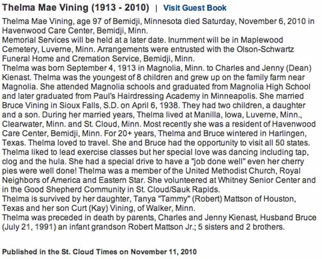
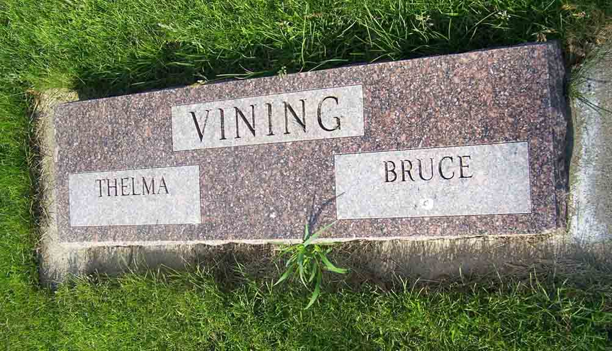

Documentation for Bruce Vining - Thelma Mae Kienast
Census Data
1940
Bruce Vining
26
Thelma Mae (Kienast) Vining
27
Death Data
Obituary for Thelma Mae (Kienast) Vining:

Headstone for Bruce Vining and Thelma Mae (Kienast) Vining, in Maplewood Cemetery, Luverne, Rock County, Minnesota (from Find A Grave):
